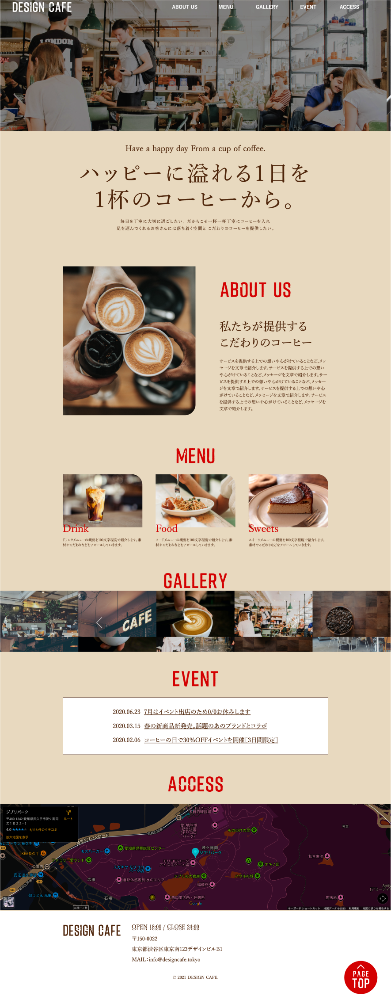
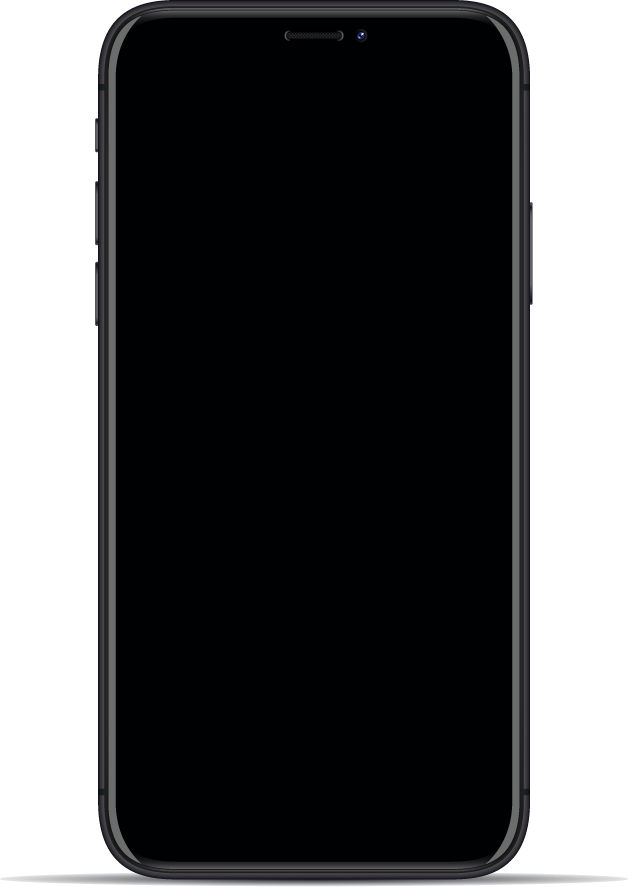
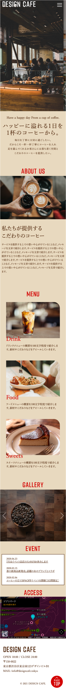

WORKS

- Design Café -
ブランドコンセプトに基づいたサイトデザイン



WEBサイト スクール課題
- 概要
- カフェの公式サイトを想定したコーポレートサイト。
店舗紹介、メニュー、ギャラリー、イベント、アクセス情報を1ページで掲載している。 - 目的
- ・店舗情報を分かりやすく伝える。
・初めて訪れるユーザーが来店判断しやすくする - ターゲット
- ・カフェを利用する一般ユーザー
・店舗情報をWebで事前に確認したい人 - 制作期間
- 約2週間
- 使用ツール
- Adobe Illustrator / Photoshop / Visual Studio Code